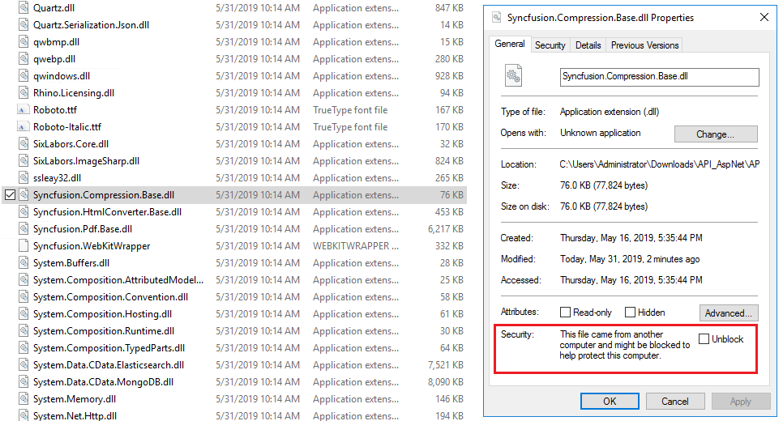

Exporting¶
Charts and other visualizations are not rendered in exports¶
This issue can occur if the WebUrl value in the IzendaSystemSetting table is empty or not set correctly. You may receive an error in the Izenda log similar to the example below:
2017-01-11 8:22:21,222 [47 ][ERROR][ExportingLogic ] Convert to image: ReportId=eeb95aa2-452d-448d-b6f5-6b1698407ef0, ReportPartId=b3d214b6-1d16-4f37-a312-33695d23ecb5
ImageUrl=/viewer/reportpart/b3d214b6-1d16-4f37-a312-33695d23ecb5?hideTitle=true&print=true&width=1080&height=360&token={your token}&draftId=3d55afd4-c7b2-4e5a-b55d-c488c93cce8b&reportPartName=Chart&tenantId=
System.Exception: HTML load error. The remote content was not found at the server - HTTP error 404
at EvoPdf.HtmlToImageConverter.?(String A_0, Boolean A_1, ?& A_2, Boolean A_3, Boolean A_4, Boolean A_5)
at EvoPdf.HtmlToImageConverter.ConvertUrlToImageObject(String url)
at EvoPdf.HtmlToImageConverter.ConvertUrl(String url, ImageFormat format)
at Izenda.BI.Exporting.ExportHelper.ConvertToImage(ExportSetting setting, ExportData data, Int32 width, Int32 height, Object separatorValue)
In this case, the ImageUrl path is not complete. The Izenda API will make a request to the Front-End in order to render the graphics needed for the export. Try updating the WebUrl value in the IzendaSystemSetting table with the URL for your front-end.
| Name | Value |
|---|---|
| WebUrl | http://localhost/ |
You can use the script below to accomplish this.
-- This is a MSSQL snippet, you may need to adjust the query for other databases.
UPDATE [IzendaSystemSetting]
SET [Value] = '<your url here including the trailing slash>'
WHERE [Name] = 'WebUrl'
Warning
As general best practice, we recommend backing up your database before making any manual updates.
If you still encounter errors, try manually browsing to the ImageURL path specified in the log file. If you are in an integrated kit, you may need to adjust your application routing.
Exporting not working in Azure environments¶
Warning
This is no longer applicable in Izenda versions after 3.0. Please see the changes in the release notes here.
If you are using an Azure website, or similar service the default exporting provider for Izenda will not work properly due to restrictions imposed by Azure App Services environment. Please consult our guide to configure Pdf Exports in Azure Websites.
Exporting to PDF not working on server hosting Izenda API v3.x¶
In Izenda versions 3.0 and greater, the exporting provider has shifted from using EvoPdf to SyncFusion, where you may see one of the common issues listed below.
Missing assemblies¶
This issue can occur if the Microsoft Visual C++ 2010 Redistributable Package is not installed on the server where the Izenda API is hosted. You may receive an error in the Izenda log similar to the example below as a result:
2019-04-17 03:00:50,561 [17 ][ERROR][IzendaBootstraper ] Izenda exception:
Izenda.BI.Framework.Exceptions.IzendaModelException ---> Syncfusion.Pdf.PdfException: Html conversion failed
at Syncfusion.HtmlConverter.HtmlConverter.CheckConversionDone(String tempFilePath)
at Syncfusion.HtmlConverter.HtmlConverter.ConvertHtmlToPdf(String url, Int32 width, Int32 height)
at Syncfusion.HtmlConverter.HtmlToPdfConverter.Convert(String url)
at Syncfusion.HtmlConverter.HtmlToPdfConverter.Convert(String html, String baseurl)
at Izenda.BI.Exporting.HtmlConverterTool.ConvertHtmlToPdf(ExportSetting setting, HtmlDocument htmlDocument)
at Izenda.BI.Exporting.Pdf.PdfExportProvider.Export(ExportContext context)
at Izenda.BI.Logic.Exporting.ExportingLogic.Export(ExportRequest request, ExportType type, Boolean enableWriteStat)
The SyncFusion exporting provider relies on the VC++ Redistributable Package for exporting to PDF. To check if the VC++ Redistributable assemblies are available on the server, you can navigate to the following locations to find if the msvcp100.dll and msvcr100.dll files are present:
- x86 machine: C:\Windows\System32
- x64 machine: C:\Windows\SysWOW64
If missing, the assemblies can be downloaded here and added into the locations listed above.
Or alternatively, the Visual C++ Redistributable installer can be downloaded and run using the links below:
Blocked assemblies¶
This issue can occur if the Syncfusion assembly files are blocked by security on the server where the Izenda API is hosted. You may receive an error in the Izenda log similar to one of the examples below as a result:
2019-05-10 11:17:19,282 [37 ][ERROR][IzendaBootstraper ] Izenda exception:
Izenda.BI.Framework.Exceptions.IzendaModelException ---> Syncfusion.Pdf.PdfException: Failed to convert the webpage
at Syncfusion.Pdf.HtmlToPdf.HtmlToPdfResult.RenderWebKit(PdfPageBase page, PdfLayoutFormat format)
at Syncfusion.Pdf.HtmlToPdf.HtmlToPdfResult.Render(PdfPageBase page, PdfLayoutFormat format)
at Syncfusion.HtmlConverter.HtmlToPdfConverter.Convert(String htmlString, String baseUrl)
at Izenda.BI.Exporting.HtmlConverterTool.ConvertHtmlToPdf(ExportSetting setting, HtmlDocument htmlDocument)
at Izenda.BI.Exporting.Pdf.PdfExportProvider.Export(ExportContext context)
at Izenda.BI.Logic.Exporting.ExportingLogic.Export(ExportRequest request, ExportType type, Boolean enableWriteStat)
--- End of inner exception stack trace ---
at Izenda.BI.Logic.Exporting.ExportingLogic.Export(ExportRequest request, ExportType type, Boolean enableWriteStat)
at XxMmyyBTVvjl.a(Object , ExportRequest , ExportType , Boolean )
at Izenda.BI.API.Export.ExportModule.<>c__DisplayClass0_1.<.ctor>b__4()
at Izenda.BI.API.IzendaModule.ExecuteInMornitoringContext(Boolean wrapingExceptionIntoOperationResult, Object paramtersToLog, Func`1 function, Boolean runAsAdministrator, String userAction, String accessToken, String currentTenant)
at Izenda.BI.API.Export.ExportModule.<>c__DisplayClass0_0.<.ctor>b__0(Object parameters)
at Nancy.NancyModule.<>c__DisplayClass38_0`1.<Post>b__0(Object args)
at Nancy.NancyModule.<>c__DisplayClass40_0`1.<Post>b__0(Object args, CancellationToken ct)
at Nancy.Routing.Route`1.Invoke(DynamicDictionary parameters, CancellationToken cancellationToken)
at Nancy.Routing.DefaultRouteInvoker.<Invoke>d__2.MoveNext()
--- End of stack trace from previous location where exception was thrown ---
at System.Runtime.ExceptionServices.ExceptionDispatchInfo.Throw()
at System.Runtime.CompilerServices.TaskAwaiter.HandleNonSuccessAndDebuggerNotification(Task task)
at Nancy.Routing.DefaultRequestDispatcher.<Dispatch>d__5.MoveNext()
--- End of stack trace from previous location where exception was thrown ---
at System.Runtime.ExceptionServices.ExceptionDispatchInfo.Throw()
at System.Runtime.CompilerServices.TaskAwaiter.HandleNonSuccessAndDebuggerNotification(Task task)
at Nancy.NancyEngine.<InvokeRequestLifeCycle>d__22.MoveNext()
2019-06-04 11:25:35,035 [45 ][ERROR][ExportingLogic ] Failed to convert to image: ReportId=73d6589d-29c5-4656-bd79-f7e700eea65b, ReportPartId=ca4a2578-d411-4907-b7a2-06b727b709dc
System.AggregateException: One or more errors occurred. ---> System.IO.FileNotFoundException: C:\WINDOWS\TEMP\23525565-9d84-41ac-b613-0fd62a6bb9f3.jpg
at System.Drawing.Image.FromFile(String filename, Boolean useEmbeddedColorManagement)
at Syncfusion.HtmlConverter.WebKitConverter.ConvertToImage(String url)
at Syncfusion.HtmlConverter.HtmlToPdfConverter.ConvertToImage(String url)
at Izenda.BI.Exporting.HtmlConverterTool.ConvertToImage(HtmlToPdfConverter htmlToPdfConverter, String url, Boolean useSvgFormat)
at Izenda.BI.Exporting.HtmlConverterTool.HandleSyncfusionOutOfMemory[T](ExportSetting setting, Func`1 func, T defaultResult)
at System.Threading.Tasks.Task`1.InnerInvoke()
at System.Threading.Tasks.Task.Execute()
--- End of inner exception stack trace ---
at System.Threading.Tasks.Task.ThrowIfExceptional(Boolean includeTaskCanceledExceptions)
at System.Threading.Tasks.Task.Wait(Int32 millisecondsTimeout, CancellationToken cancellationToken)
at (Object , Int32 )
at Izenda.BI.Exporting.HtmlConverterTool.ConvertToImage(ExportSetting setting, Int32 width, Int32 height, String url, Boolean useSvgFormat)
at Izenda.BI.Exporting.ExportHelper.ConvertToImage(ExportSetting setting, ExportData data, Int32 width, Int32 height, Object separatorValue, Boolean useSvgFormat)
---> (Inner Exception #0) System.IO.FileNotFoundException: C:\WINDOWS\TEMP\23525565-9d84-41ac-b613-0fd62a6bb9f3.jpg
at System.Drawing.Image.FromFile(String filename, Boolean useEmbeddedColorManagement)
at Syncfusion.HtmlConverter.WebKitConverter.ConvertToImage(String url)
at Syncfusion.HtmlConverter.HtmlToPdfConverter.ConvertToImage(String url)
at Izenda.BI.Exporting.HtmlConverterTool.ConvertToImage(HtmlToPdfConverter htmlToPdfConverter, String url, Boolean useSvgFormat)
at Izenda.BI.Exporting.HtmlConverterTool.HandleSyncfusionOutOfMemory[T](ExportSetting setting, Func`1 func, T defaultResult)
at System.Threading.Tasks.Task`1.InnerInvoke()
at System.Threading.Tasks.Task.Execute()<---
In this case, the Syncfusion assembly files may be blocked by Windows security and would need to be unblocked. To check this, you can navigate to the bin folder of the Izenda API resources and inspect the properties of each of the Syncfusion .dll files. If the assembly is blocked, the properties will show similar to the below:
